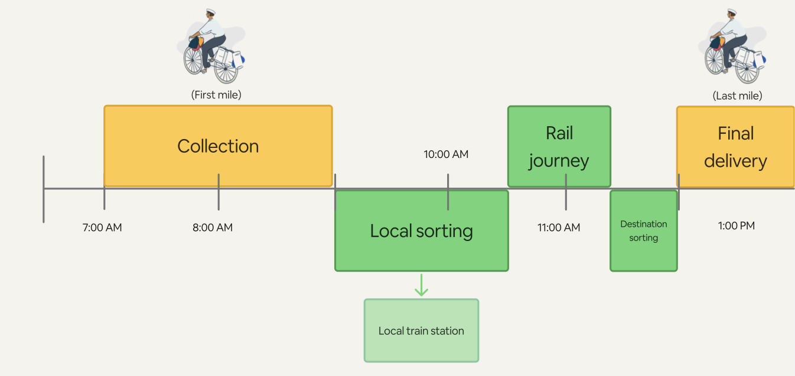
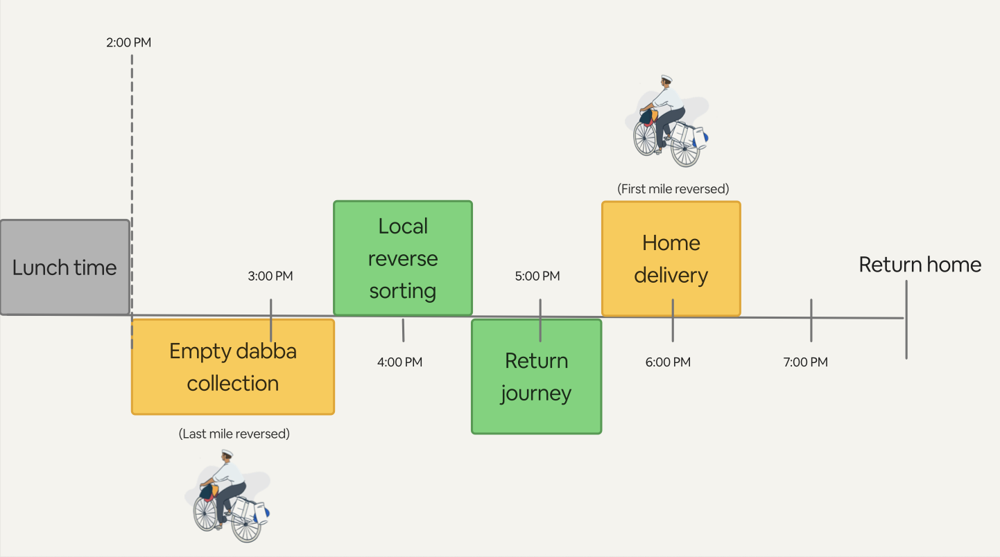
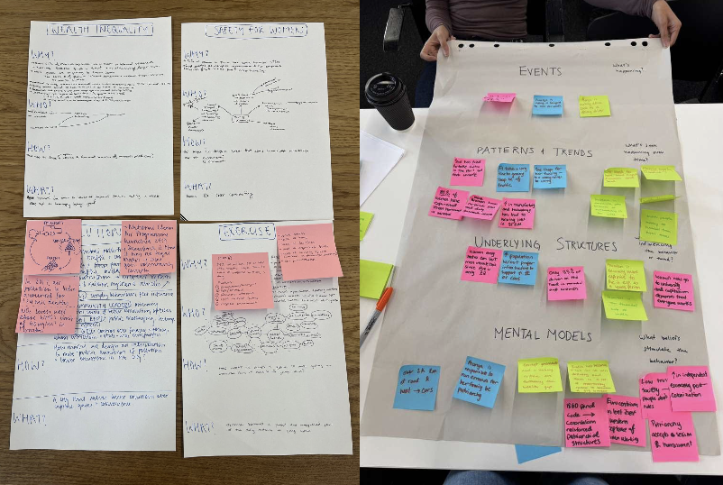
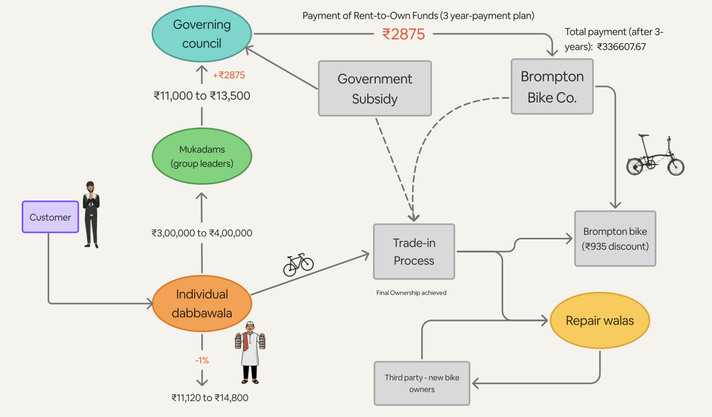
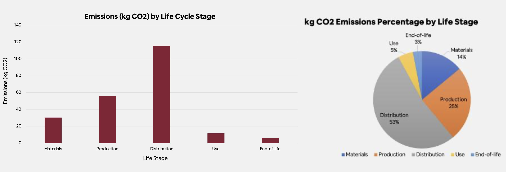
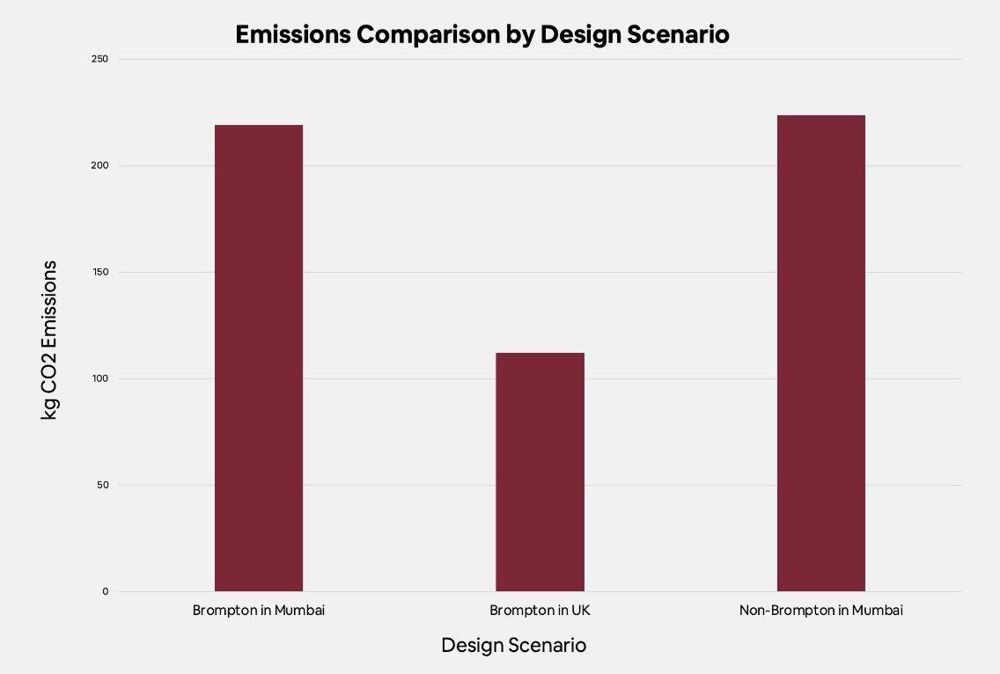

The DabbaWala Line: Bicycle Trade-In System for Mumbai’s Tiffin Carriers
The Dabbawala Line is a proposal to modernize the bicycle lifecycle within Mumbai’s dabbawala lunchbox delivery network — one of the world’s most reliable logistics systems — by introducing a trade-in and rent-to-own scheme with premium folding bikes. We designed a trade-in and rent-to-own scheme, developed in collaboration with Brompton Bicycle, that allows dabbawalas to exchange worn bicycles for higher-quality Brompton folding bikes, financed through a co-operative, decentralized payment model.
The Dabbawala System
The dabbawala network is a 130-year-old delivery system that moves roughly 190,000 lunch boxes each day across Mumbai, operated by approximately 5,000 dabbawalas with 99.99% accuracy — without the use of GPS or any digital tracking. Each dabbawala carries 30–40kg of cargo per bike, relying on a combination of metro trains and bicycles to complete first-mile collection, sorting, rail transport, and last-mile delivery, all timed to a precise daily schedule.


The Problem
Bicycles within the dabbawala system are treated as lifelong assets, often passed down through generations. But increasing theft and continuous wear disrupt this lifecycle, leading to frequent repairs and replacements — resulting in ongoing financial and operational strain for individual dabbawalas.
Our Process
We began with systems-level research into the socio-political and cultural forces shaping transportation in Mumbai, including stakeholder interviews with current and former Mumbai residents and a Brompton brand ambassador.

One insight that shaped our direction: status plays a significant role in transportation choices in Mumbai. As one interviewee put it, cycling is often perceived as something for the lower class rather than a viable choice across income levels — a perception reflected in the city’s informal transportation hierarchy, where private vehicles sit at the top and walking and cycling sit at the bottom.
Proposed System
We designed a trade-in and rent-to-own scheme that allows dabbawalas to exchange worn bicycles for higher-quality Brompton folding bikes, financed through a co-operative, decentralized payment model. Money flows bottom-up through the existing dabbawala hierarchy — from individual dabbawala to mukadam (group leader) to governing council — with an added government subsidy supporting a 3-year rent-to-own payment plan with Brompton.

The system also incorporates a trade-in and repair pipeline: old bikes are routed to repair-walas or resold to third-party buyers, keeping bicycles in circulation rather than in landfill, while dabbawalas gain access to Brompton’s fold-up design — which can be carried onto trains, reducing theft risk during the rail portion of their route.
Why Brompton bikes:
- Security — foldable design allows bikes to be brought onto the train, reducing theft during transit
- Longevity — built for a 20-year lifecycle, positioning the bike as a generational asset rather than a disposable tool
- Quality — removes the current hand-off system between bikes, increasing overall system efficiency and potential income
Sustainability Impact
Our life cycle analysis compared the carbon footprint of a Brompton bicycle sourced from the UK against non-Brompton alternatives across materials, production, distribution, use, and end-of-life stages. Distribution accounted for the largest share of emissions (53%), followed by production (25%) and materials (14%).

Comparing design scenarios — UK distribution reduced total emissions by 49%, primarily by cutting distribution-related emissions by 93% relative to the original scenario.
Because one durable Brompton bike (20-year lifespan) can replace roughly four dabbawala bikes (each with a 3–5 year lifespan), the proposed system results in an estimated +70% resource savings and +400% increase in product lifespan per bike in circulation.

Looking Ahead
Beyond bicycle longevity, this system opens the door to a broader rebrand and expansion of the dabbawala network’s role in Mumbai’s delivery economy — positioning it to compete with app-based delivery services while preserving its cooperative, community-rooted structure.